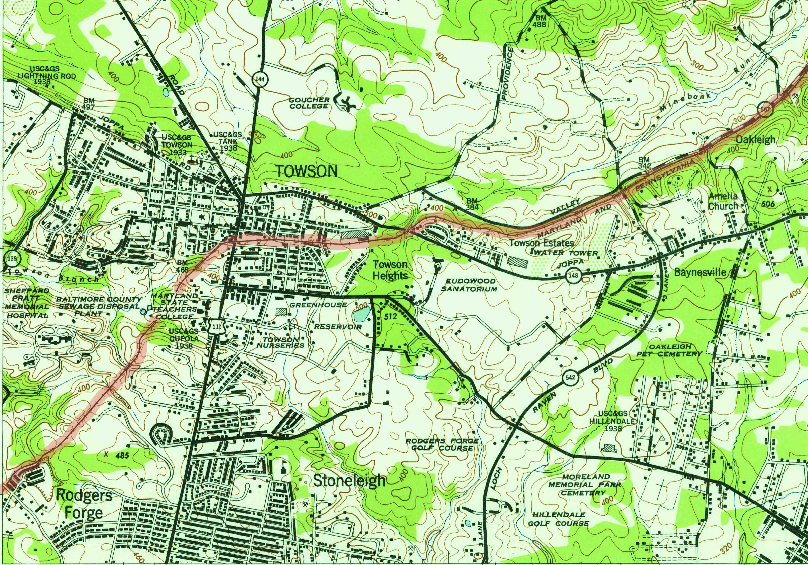

Hidden History of Towson University
3 facts you might not know about campus
Watercolor of original campus design. (Courtesty Towson Univesrity Albert S. Cook Library Digital Archives)
We walk through campus every day, so we know it pretty well, right?
While we might know which parking lots fill up the fastest or the shortest route to Cook Library, most of us don’t know the hidden history all around us. Over its 153 years, Towson University has undergone immense change since its farmland origins when pigs ate dining hall scraps.
Some stories, like the tunnels running below campus that were equipped as fallout shelters during the Cold War, are elusive.
For example, walkers traveling from Bosley Avenue down the hill into campus are following “Pig Pen Alley.” A pig pen at the top of the hill where Ward and West Hall now stands inspired the path’s nickname, according to Felicity Knox, library associate to University Special Collections and Archives at Cook Library.
When Towson University (then the Maryland State Normal School) bought the land where the university sits today, the four plots included a farm and farmhouse on the west side of campus.
“The farm helped keep costs low in the dining hall, supplying vegetables and meat when available,” Knox says. “Pigs were kept to deal with food scraps on campus and were then sold by the school for extra income.”
In his report dated Oct. 31, 1922, farmer George H. Ehlers details the produce delivered to the school dormitory, including 92 bushels of potatoes, 87 bushels of tomatoes, 34 dozen sweet corn, and 48 bunches of parsley.
The Maryland and Pennsylvania Railroad, also known as the Ma and Pa Railroad, ran passenger and freight trains from York, Pennsylvania, to Baltimore from 1901 to the late 1950s.
The train tracks ran along the western edge of campus, near where the College of Liberal Arts stands today. This made the property attractive to the Maryland State Normal Building Commission, a group formed by the Maryland State General Assembly in 1910 to identify and secure land for the growing state teacher college.
“[The Maryland State Normal School] taught students from every county in Maryland, who were sent to school for free in exchange for a promise to teach in state schools,” Knox adds. “Access to reliable transportation was a priority for the Building Commission.”
While the No. 8 streetcar line that ran along York Road next to campus provided access to downtown Baltimore, the railroad enabled the school to attract students from farther away before traveling by car became the norm.
“It ran all the way back through the Glen [Arboretum], so students would talk about laying in their dorm beds at Newell and Richmond and hearing the train whistle,” Knox says.
It’s long been rumored that tunnels run beneath Towson University’s campus. And it turns out the rumors are true.
Their origins begin with the first groundbreaking of campus land, which was acknowledged in an Oct. 13, 1913 Baltimore Sun article with the headline “Dirt to Fly Tomorrow.”
Leveling of the land and removal of trees on the rocky, hilly plot was done primarily by hand, Horses and wagons hauled out soil and debris from the site.
Workers used the steam shovel to dig the tunnel leading from the Power Plant to the main academic and administrative building, Stephens Hall. This enabeled underground service lines to run water, electricity, and heat to the main buildings on campus.
A service line off the Maryland and Pennsylvania Railroad brought coal and other construction materials straight to the Power Plant. Its original smoke stack and brick structure remain within the larger updated building that supplies power to campus.
“The tunnel is still in use,” Knox says. “If you go by the Power Plant on the side down past Newell and look, there’s a set of stairs right there.”
During the Cold War, the tunnel was identified as an ideal location for a fallout shelter. It was considered one of the best equipped in the state, according to a Nov. 11, 1960 issue of the student newspaper Tower Light.
“This tunnel is equipped with a three-week food and water supply and is capable of providing living space for all residents,” states the article, which focuses on civil defense equipment on campus, including Geiger counters, decimeters, and an ionization chamber meter.
{kind=link}